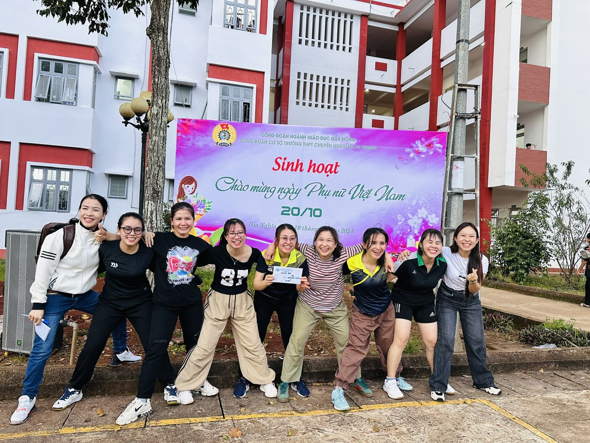

Trọng trách mà mỗi người phụ nữ Việt Nam trong thời đại mới phải gánh vác là vô cùng nặng nề, với nữ cán bộ, giáo viên trường THPT Chuyên Nguyễn Chí Thanh, họ vừa phải hoàn thành xuất sắc các công việc của nhà trường, vừa phải thực hiện bổn phận của một người thắp lửa, giữ lửa trong gia đình. Đúng như một triết gia đã nói: “ Phụ nữ luôn sẵn sàng hy sinh, nếu bạn cho họ cơ hội. Sở trường của họ chính là nhường nhịn”. Không chỉ giàu dịu dàng, đảm đang, nữ tính, quý cô trường chuyên còn là những gương mặt vô cùng trẻ trung, năng động, hài hước. Điều đó được thể hiện trong công tác giảng dạy, hoạt động phong trào, đặc biệt là trong những trận cầu nảy lửa.
Giải bóng chuyền nội bộ dành cho giáo viên, công nhân viên nữ được tổ chức chiều ngày 18/10 là dịp để rèn luyện sức khỏe, tạo dựng tinh thần đoàn kết, cũng như giúp chị em có những trận cười sảng khoái với những pha bóng đi vào lịch sử của các huyền thoại bóng chuyền trường THPT chuyên Nguyễn Chí Thanh.
